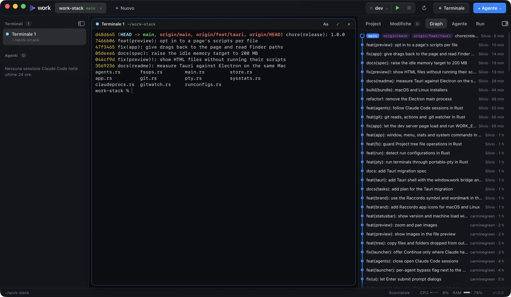

Terminali in griglia
Tutti i terminali che vuoi, disposti in automatico. Si ingrandiscono, si riordinano trascinandoli e si spostano da un progetto all'altro. Ognuno mostra la sua cartella corrente.
Terminali, git e agenti AI in un'unica finestra. Per chi lavora su più repository e lascia lavorare Claude Code, Codex e Gemini accanto a sé.

Funzioni
Ogni progetto è un tab con i suoi terminali, il suo albero e il suo stato git. Apri, sposti, fai commit e segui gli agenti senza cambiare app.
Tutti i terminali che vuoi, disposti in automatico. Si ingrandiscono, si riordinano trascinandoli e si spostano da un progetto all'altro. Ognuno mostra la sua cartella corrente.
Stage, commit (anche amend), branch, stash, fetch, pull e push. Il graph mostra tutti i branch. Il diff è affiancato e mette in evidenza le parole cambiate.
Vedi cosa sta facendo ogni sessione di Claude Code, a partire da quelle del progetto aperto. Puoi riprendere una sessione chiusa o chiudere quella che non serve più.
I file sono colorati secondo lo stato git. Crei, rinomini, trascini per spostare (con "Annulla") e trascini file dal Finder. Markdown e HTML hanno l'anteprima.
Trova da solo i comandi del progetto: script npm, Make, Cargo, Go, Django e Docker Compose. Li avvii, li riavvii e li fermi con un clic. Un chip apre il server locale nel browser.
Profili colore nello stile di Terminal.app, che provi dal vivo passandoci sopra. Scegli la dimensione del testo, la forma del cursore e il lampeggio.
Il pulsante ✦ Agente elenca gli agenti CLI installati sulla tua macchina e ti fa installare quelli che mancano. Il flag bypass avvia l'agente senza richieste di conferma e viene ricordato agente per agente.
Prestazioni
Work usa Tauri 2 e la WebView del sistema al posto di Electron. Terminali, git e watcher girano in un backend Rust, e il lavoro in background parte dagli eventi del file system, senza polling.
git: niente Node, niente PythonMisure su MacBook Air M4 (16 GB, macOS 26.6) con lo stesso codice dell'interfaccia, un progetto e un terminale aperti. La memoria è il footprint di tutti i processi dell'app, mediana di 3 avvii. Anche con seq 1 1000000 in un terminale l'interfaccia resta fluida (frame più lungo 32–36 ms), grazie all'output a blocchi con controllo di flusso.
Download
Gratis, per macOS e Linux. L'unico requisito è git.
Work non è ancora firmato da Apple. Apri Impostazioni di Sistema → Privacy e sicurezza e scegli Apri comunque. In alternativa, dal Terminale: xattr -dr com.apple.quarantine /Applications/Work.app
Serve webkit2gtk-4.1, già presente su Ubuntu 22.04 e successive. I pacchetti .deb e .rpm installano git da soli.
Il PKGBUILD reimpacchetta il .deb della release e usa la WebKitGTK di sistema:
git clone https://github.com/overzoomit/work-stack.git
cd work-stack/packaging/arch
makepkg -siSe la finestra resta bianca (NVIDIA, Wayland), avvia con WEBKIT_DISABLE_DMABUF_RENDERER=1 work.
Tutte le versioni sono su GitHub Releases.
Dal sorgente
Servono Node 22+, Rust stable e git. Su Linux servono anche le librerie di sviluppo di WebKitGTK.
git clone https://github.com/overzoomit/work-stack.git
cd work-stack
npm install
npm run dev # avvia in sviluppo
npm run build # installer in src-tauri/target/release/bundle/